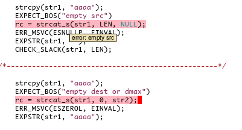

In the previous “The sad state of foldcase and string comparisons” article I already mentioned my safeclib library improvements, for the surpringly rather unique ability to search for strings (with Unicode support).
With the recent safeclib-3.3 release I made the almost same improvements as in cperl: Adding lots of compile-time checks and seperating them out of the run-time. Do less branching at run-time when the compiler can already prove that a certain branch or check was already done at compile-time. With cperl it is much easier, because there I can control both, the compiler and the run-time. All in one exectable.
With safeclib, the user just includes safeclib via
#include "safe_lib.h" and compiles and links it with his own compiler.
There’s it’s much harder. Both clang and gcc do support such compile-time
checks via __builtin_object_size (aka BOS) and the ill-designed
__builtin_choose_expr, and clang-5+ can now even throw user-defined
compile-time errors via __attribute__((diagnose_if)), which is
extremely powerful and heavily used with safeclib-3.3. All checks
which were previously done at run-time, to check for NULL pointers,
empty sizes, wrong size arguments for pointer sizes, overflows,
pointer overlaps and wrong constant values are now done at
compile-time with clang-5+. With a proper development environment,
e.g. emacs with flycheck or flymake with a check-syntax target in your
Makefile:
# emacs flymake-mode
check-syntax:
test -n "$(CHK_SOURCES)" && \
$(COMPILE) -o /dev/null -S $(CHK_SOURCES)
Every wrong argument to a safeclib function is already warned about in
your IDE. 
On every keypress flymake runs the compiler on your C source via the
make check-syntax CHK_SOURCES="your-c-source.c" makefile target, and then
displays warnings in blue and errors in red, with the message as mouse-over
hover.
strcat_s is defined in safe_str_lib.h like this:
EXTERN errno_t
_strcat_s_chk(char * restrict dest, rsize_t dmax, const char * restrict src,
const size_t destbos)
BOS_CHK(dest) BOS_NULL(src);
#define strcat_s(dest,dmax,src) _strcat_s_chk(dest,dmax,src,BOS(dest))
And the new compile-time checks BOS_CHK(dest) and BOS_NULL(src) are defined in safe_compile.h like this:
#define BOS_CHK(dest) \
__attribute__((diagnose_if(_BOS_OVR(dest,dmax), "dest overflow", "error"))) \
__attribute__((diagnose_if(_BOS_NULL(dest), "empty dest", "error"))) \
__attribute__((diagnose_if(_BOS_ZERO(dest,dmax), "empty dest or dmax", "error")))
#define BOS_NULL(dest) \
__attribute__((diagnose_if(_BOS_NULL(dest), "empty dest", "error")))
#define _BOS_OVR(dest,dmax) (_BOS_KNOWN(dest) && (size_t)(dmax) > BOS(dest))
#define _BOS_ZERO(dest,dmax) ((_BOS_KNOWN(dest) && BOS(dest) == 0) || (dmax) == 0)
#define _BOS_NULL(dest) ((_BOS_KNOWN(dest) && BOS(dest) == 0) || !(dest))
#define BOS(dest) __builtin_object_size((dest),1)
#define _BOS_KNOWN(dest) ((size_t)BOS(dest) != BOS_UNKNOWN)
#define BOS_UNKNOWN ((size_t)-1)
So whenever a string, dest, is known to have a constant size, and the size dmax is known to be constant at constant-folding time in the compiler, BOS will not return BOS_UNKNOWN and the check expression will be reduced to a constant integer, and a warning or error can be thrown.
TODO static_assert/constexpr
With other compilers it’s not that easy. Almost all other compilers do
have BOS support for such constant-folding checks. But gcc will throw
an error if any argument to a compile-time expression is unknown/not a
constant, constant_p does not help for non-pointers and BOS is not
known for choose_expr so it cannot be used. Also
static_assert is only a statement and not an expression. constexpr is
only available to g++, not gcc.
You can write your own static_assert as expression, the linux kernel
has such tricks.
E.g. you can define memcpy_s as such for gcc:
/* gcc bug: BOS is not a valid constant compile-time expression for gcc-7 */
#define memcpy_s(dest,dmax,src,slen) \
IFCONSTP(dmax, dmax != 0, \
IFCONSTP(dmax, dmax < RSIZE_MAX_STR, \
IFCONSTP(dest, dest != NULL, \
IFCONSTP(src, src != NULL, \
_memcpy_s_chk(dest,dmax,src,slen,BOS(dest),BOS(src)), \
"src is null"), \
"dest is null"), \
"dmax > max"), \
"dmax is zero")
#define CONSTP(ptr) __builtin_constant_p(ptr)
#define CHOOSE_EXPR(exp,ok,notok) __builtin_choose_expr(exp,ok,notok)
#define IFCONSTP(var,exp,ok,errmsg) \
CHOOSE_EXPR(CONSTP(var) ? (exp) : 1, (ok), ""errmsg[-1])
""errmsg[-1] will expand to "src is null"[-1] which be an illegal
array access, and a compiler error error will be thrown with a useful
error message. This memcpy_s() can be used within expressions, within
comma-lists unlike static_assert. But the problem is that some
expressions in this nested check, like dmax > BOS(dest) (“dest
overflow”) will be invalid if the BOS is unknown. The BOS for dest is
only known for stack allocation and direct malloc using system malloc
with alloc_size support, and if the variable is not passed into longer
functions with insufficient compiler optimization levels, without
proper var-tracking. So that the compiler cannot prove the size of a
certain symbol, only its type.
So only some errors can be detected with gcc at compile-time, not all run-time checks can be performed at compile-time, and as such the run-time has to do it with a ~10% performance degration.
There’s also Intel’s MPX Pointer Bounds Checker using special
registers and a hardware hash table for each pointer to hold the size
of an array, to be able to do fast run-time bounds checks. icc has
this since icc-15, gcc since 5. In gcc performant only since 5.3. But
it is optional, not shipped with your packagers gcc. safeclib does
throw such mpx violations if supported, but in practice it’s very
rarely supported. BOS checks are much more common and successful,
esp. with clang-5+.
The linux kernel compiletime assertions do look this:
#ifdef HAVE_STATIC_ASSERT
# define __compiletime_assert(condition,msg,prefix,suffix) \
static_assert(condition,msg);
#else
/* linux kernel a-like compile checks */
# if __has_attribute(error)
# define __compiletime_error(msg) __attribute__((error(msg)))
# define __compiletime_error_fallback(cond,msg) do { } while (0)
# else
# define __compiletime_error(msg)
# define __compiletime_error_fallback(cond,msg) \
do { ((void)sizeof(char[1 - 2 * cond])); } while (0)
# endif
# define __compiletime_assert(condition, msg, prefix, suffix) \
do { \
bool __cond = !(condition); \
extern void prefix ## suffix(void) __compiletime_error(msg); \
if (__cond) { \
prefix ## suffix(); \
} \
__compiletime_error_fallback(__cond, msg); \
} while (0)
#endif
#define _compiletime_assert(condition, msg, prefix, suffix) \
__compiletime_assert(condition, msg, prefix, suffix)
#define compiletime_assert(condition, msg) \
_compiletime_assert(condition, msg, __compiletime_assert_, __LINE__)
and its usage would look like this:
#define CT_DEST_NULL(ptr) \
({compiletime_assert(ptr != NULL, #ptr " is null")},ptr)
#define CT_DMAX_ZERO(var)\
({compiletime_assert(var != 0, #var " is zero")},var)
Instead of __LINE__ as unique suffix, __COUNTER__ would be better,
esp. inside expressions, which can have multiple such asserts in a
single line. e.g. a function call. The unique suffix is needed for the
empty function with an __attribute((error)) attribute to throw the
user-defined error, similar to clang’s diagnose_if.
The (void)sizeof(char[1 - 2 * cond] bit throws the compile-time error
if cond is false and returns the value if cond is true.
The kernel has dirty thinks like this:
#define CT_DEST_NULL(ptr) ((void *)sizeof(struct { int:-!!(ptr); }))
with !!(ptr) collapsing the pointer value to a boolean to 0 or 1,
with -1 being the invalid bitfield size, leading to the compile-time
error. But this is hardly portable, and anon structs are not valid with
-pedantic, which is used for safeclib.
So why not using static_assert statement checks?
This depends on the compiler ability to track the size of variables
across function boundaries. We can only add the static_assert at the beginning
of the body of our functions, e.g. strcat_s
EXPORT errno_t
_strcat_s_chk (char *restrict dest, rsize_t dmax, const char *restrict src,
size_t destbos)
{
static_assert(dmax <= destbos, "dest overflow");
static_assert(dmax != 0, "dmax is zero");
static_assert(dest != NULL, "dest is null");
...
}
with #define strcat_s(dest,dmax,src) _strcat_s_chk(dest,dmax,src,BOS(dest))
Very few optimizers will be able to deduce dmax to be a compile-time constant into
_strcat_s_chk, even if we calculate BOS before calling the function and pass it into it.
So gcc sucks big time when compared to clang. Also when we benchmark
our own memcpy_s
implementation against the assembler optimized memcpy from
libc. clang-5 can now easily vectorize and unrool the memcpy loop, and
my own memcpy_s() in pure portable C is now as fast as the system
memcpy(), even if my memcpy_s does perform all the necessary
overflow and vailidity checks. The trick is that most of that checks
are done at compile-time already. gcc is twice as slow.
FreeBSD/glibc hate for the constraint-handler “crap”
One reason why the secure C11 Annex K API is not yet added to the various libc’s is not ony because it was written and designed by Microsoft. The public reason given is the mandatory constraint handler, which by default does nothing in case of errors. But it can be set to a user-defined handler, which logs those errors.
With the new configure option --disable-constraint-handler you can
now disable this feature and avoid this “crap”. But the performance
win is not measurable, only the binary size will go down. Because all
the static error strings will be left out of the .cstrings section
in the binary. The performance is unchanged, because the handler is
only called in case of errors.
But bsd/glibc are proud of their various MALLOC hooks, via run-time getenv checks to help in bug hunting. The safeclib constraint handler mechanism is much more performant than this, but you need to recompile your software with a different constraint handler, or prepare such a getenv check and install a handler at run-time. There’s no technical reason not to use it as designed.
I’ll certainly add lot of BOS checks to cperl also, esp. for XS programmers. It was extremely useful when developing apps with safeclib, and gcc is side-lined until they can come up with proper retpoline names and constant-folding support to catch errors when writing code, not in the test-suite or at the customer site.